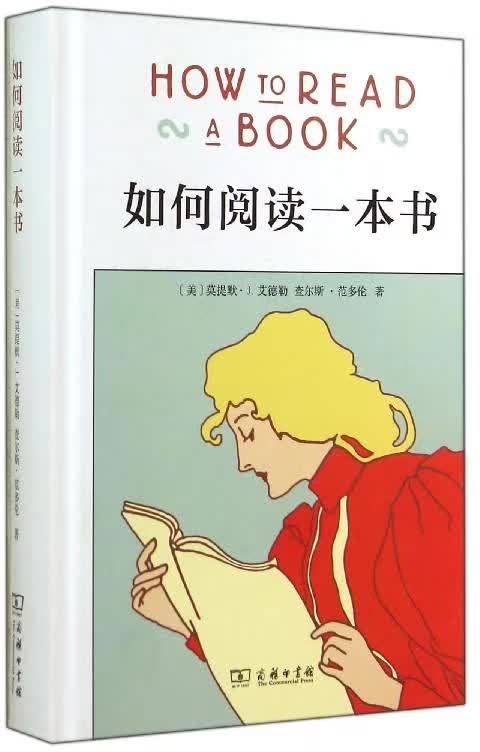

《如何阅读一本书》摘要
作者：读书之韵公众号
按：推荐读者去看这本书全本。
今天要和大家分享的一本书是《如何阅读一本书》，作者是莫提默·J.艾德勒和查尔斯·范多伦。

阅读是一件简单的事，同时它也是件非常困难的事，我们不仅仅是要能够读完一本书，更重要的是可以从中得到我们所需的信息和资源，这才是我们最终的目的。
全书四大篇共计二十一章，在此仅做简单整理以供大家参考。（整理内容并非按书中顺序）
1 阅读的四个层次
- 1.
基础阅读：初级阅读、基本阅读或初步阅读
- 2.
检视阅读：特点强调时间，在一定时间之内，抓出一本书的重点。
- 3.
分析阅读：在无限的时间里，最好最完整的专注阅读。
- 4.
主题阅读：比较阅读，很多书之间对比分析
2 阅读者要提出的四个问题
- 1.
这本书倒底在谈些什么？
- 2.
作者细部说了什么，如何说的？
- 3.
这本书说的有道理吗？
- 4.
这本书跟你有什么关系？
3 检视阅读
第一层次的基础阅读较为简单，能够识字，有一定认知能力即可，这里不作详细说明。一起来看看第二层次的检视阅读。
检视阅读共分为两种。
A. 第一种：有系统的略读或粗读
（1）先看书名页，后若有序就看序；
（2）研究目录页，对基本架构作概括性的理解；
（3）检阅书中附有的索引；
（4）如果是包裹书衣的新书，读一下出版者介绍；
以上四个步骤用于判断自己是否需要继续阅读这本书籍。
（5）挑选几个跟主题息息相关的篇章或摘要来看；
（6）最后打开书，大概翻阅，最重要的是不要忽视结尾和后记，留意主题的基本脉动。
这是一种非常主动的阅读方式，读者必须灵活、集中精神进行阅读，否则很难寻找书中的主要论点。
B. 第二种：粗浅的阅读
粗浅的阅读的规则：面对一本难读的书的时候，从头到尾先读完一遍，遇到不懂的地方不要停下来查询或思索，但要做好标记。
很多人在读书时遇到难以理解的部分，便会深陷其中不能自拔，久而久之就会因为泄气、精神分散而放弃，甚至是失去了乐趣。因此第一次阅读一本书时，只注意自己能理解的部分，不要为一些无法立即了解的内容而停顿。难点部分做好标记后，再重读深究。
4 分析阅读
分析阅读：一种专注、追寻理解的活动。在无限的时间里，最好最完整的阅读。
A. 第一阶段四个规则：找出一本书在谈些什么的规则
第一个规则：明确自己所读书的类型。
第二个规则：用最简短的句子叙述整本书在谈些什么。
第三个规则：将书中重要篇章列举出来，说明它们如何按照顺序组成一个整体的架构。
第四个规则：找出作者问的问题，或想要解决的问题。
B. 第二阶段四个规则：诊释一本书的内容规则
第一个规则：诠释作者使用的关键字，与作者达成共 识。
第二个规则：从最重要的句子中抓出作者的重要主旨。
第三个规则：找出作者的论述，重新架构这些论述的前因后果，以明白作者的主张。
第四个规则：确定作者已经解决了哪些问题，还有哪些是未解决的。在未解决的问题中，确定哪些是作者认为自己无法解决的问题。
C. 第三阶段三规则四标准：批判式阅读的规则
（1） 智慧礼节的一般规则
第一个规则：要求读者先完整地了解一本书，不要急着开始批评
第二个规则：恳请读者不要争强好辩或盲目反对
第三个规则：将知识上的不同意见看作是大体上可以解决的问题，要求读者要为自己不同的意见找到理论基础
（2）批评观点的特别标准
第一：证明作者的知识不足；
第二：证明作者的知识错误；
第三：证明作者不合逻辑；
第四：证明作者的分析与理由是不完整的。
5 主题阅读
主题阅读，也叫比较阅读，在多本书中找到相同的主题进行对比分析。在主题阅读中有两个阶段。一个是准备阶段，另一个是主题阅读本身。
A观察研究范围：主题阅读的准备阶段
（1）针对你要研究的主题，设计一份试验性的书目。你可以参考图书馆目录、专家的建议与书中的书目索引。
（2）浏览这份书目上所有的书，确定哪些与你的主题相关，并就你的主题建立起清楚的概念。
B主题阅读五步骤：阅读所有第一阶段收集到的书籍
第一个步骤：找到相关章节。浏览所有在第一阶段被认定与你 主题相关的书，找出最相关的章节。
第二个步骤：根据主题创造出一套中立的词汇，带引作者与你达成共识。无论作者是否实际用到这些词汇，所有的作者，或至少绝大部分的作者都可以用这套词汇来诠释。
第三个步骤：厘清问题。建立一个中立的主旨，列出一 连串的问题—无论作者是否明白谈过这些问题，所有的作者，或者至少大多数的作者都要能解读为针对这些问题提供了他们的回答。
第四个步骤：界定议题。将作者针对各个问题的不同意见整理陈列在各个议题之旁。
第五个步骤：分析讨论。这得把问题和议题按顺序排列，以求突显主题。比较有共通性的议题，要放在比较没有共通性的议题之前。各个议题之间的关系也要清楚地界定出来。
6 解决读书存在的逗留与倒退问题
最简单的训练方法：将大拇指、食指、中指合并在一起，用这个“指针”顺着一行一行的字移动下去，速度要比你眼睛感觉的还要快一点。强迫自己的眼睛跟着手部的动作移动。一旦你的眼睛能跟着手移动时，你就能读到那些字句了。继续练习下去，继续增快手的动作，等到你发觉以前，你的速度已经可以比以前快两三倍了。
当然，你也可以通过选择参加一些课程来矫正这个习惯。
7 三种做笔记方法
结构笔记：笔记重点是全书框架，而不是内容
概念笔记：根据作者表达主题提出自己的观点
辩证笔记：联系其他书的观点进行理解与比较
8 如何阅读不同类型的书籍
a. 实用型的书
要问的两个问题：
第一：作者的目的是什么？
第二：他建议用什么方法达到这个目的？
b. 想象文学
（1）不要抗拒想象文学带给你的影响力，一定得大开心灵接纳它。
（2）不要去找共识、主旨或论述。
（3）不要用适用于传递知识，与真理一致的标准来批评小说。
c. 故事书、戏剧与诗
故事书：
（1）全心全意的快读。
（2）这本书在谈什么。
戏 剧：戏剧也是故事，假装看到演出的实景，一旦发现剧本谈的是什么，就可以开始导演这个剧本。
抒情诗：
（1）无论读不读得懂，都要一口气读完，不要停。
（2）重读一边——大声读出来。
d. 历史书
（1）对你感兴趣的事件或时期，尽可能阅读一种以上的历史书。
（2）阅读历史时，不只要关心在过去某个时间、地点正真发生了什么事，还要读懂在任何时空之中，尤其是现在，人们为什么会有如此这般行动的原因。
e. 科学与数学
（1）清楚的知道作者想要解决的问题是什么
（2）自己亲身体验以获得必要的特殊经验
（3）全神贯注，学会思考，找出主旨与论述
f. 哲学书
（1）弄清作者的词义与基本主旨
（2）最重要的就是发现问题，学会思考
g. 社会科学
社会科学包括人类学、经济学、政治学和社会学。
（1）列出书的纲要框架，尽力与作者达成共识。
（2）这本书在说些什么？与我有何关系？
（3）运用主题阅读的阅读技巧